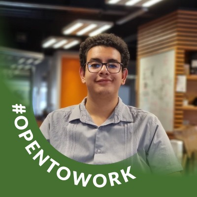

Hola, soy
Limón.
Soy José Manuel Limón Ávila, Desarrollador Full Stack Jr. con formación como Ingeniero en Sistemas Automotrices. Diseño e implemento aplicaciones web funcionales integrando APIs REST y bases de datos SQL, con experiencia adicional en visión por computadora e inteligencia artificial — un perfil analítico orientado a aportar valor técnico desde el primer día.
Portafolio

Plataforma E-commerce
Catálogo de productos responsivo diseñado en Figma. Coordiné con Jira las dailys y el backlog de un equipo de 10 colaboradores, y organicé el control de versiones con una rama por colaborador en GitHub.

Prevención de Deslumbramiento
Sistema basado en CNN para detectar vehículos en sentido contrario y controlar dinámicamente una matriz LED, reduciendo el tiempo de respuesta a 0.36 ms con ~93% de fiabilidad en la detección.

Pokédex Interactiva
Pokédex construida con JavaScript puro y la PokéAPI: ficha por pestañas, cadena de evolución dinámica, cálculo de debilidades/resistencias por tipo y comparador de Pokémon 1 vs 1.

RH App — Gestión de Personal
CRUD completo en Angular para administrar empleados (alta, edición, consulta y baja) contra una API REST propia, con color por departamento y vista de tarjetas responsiva en móvil.
Acerca de mí

Soy José Manuel Limón Ávila. Estudié Ingeniería en Sistemas Automotrices en el IPN (ESIME UPIITA), y durante ese camino descubrí que lo que más disfrutaba no era el motor en sí, sino el código que lo hacía "pensar" — los sistemas de visión, los sensores, la lógica detrás de cada decisión automatizada.
Esa curiosidad me llevó a explorar proyectos de inteligencia artificial y visión por computadora, aplicándolos a problemas reales del mundo físico — no solo en una pantalla. Ahí entendí que lo mío no era el hardware en sí, sino el software que le da sentido.
Hoy estoy formalizando ese camino hacia el desarrollo de software: curso el bootcamp de Desarrollador Java Fullstack en Generation México, construyendo aplicaciones web con APIs REST y bases de datos SQL, sin dejar atrás la visión por computadora que me trajo hasta aquí. Busco integrarme a un equipo donde pueda aportar ese perfil técnico y analítico, y seguir expandiendo mi dominio de tecnologías modernas.
De la mecatrónica al código
Mi formación en sistemas automotrices me dio una base sólida de análisis: entiendo el problema completo antes de escribir la primera línea.
De la demo a producción
No me conformo con que algo funcione en pruebas: me interesa que sea confiable y sostenible en el uso real, día a día.
Aprendizaje constante
Sigo expandiendo mi stack activamente, porque el aprendizaje continuo es parte de cómo trabajo, no un extra.
¿Trabajamos juntos?
Siempre estoy abierto a conversar sobre nuevos proyectos, ideas creativas u oportunidades para formar parte de tu visión.